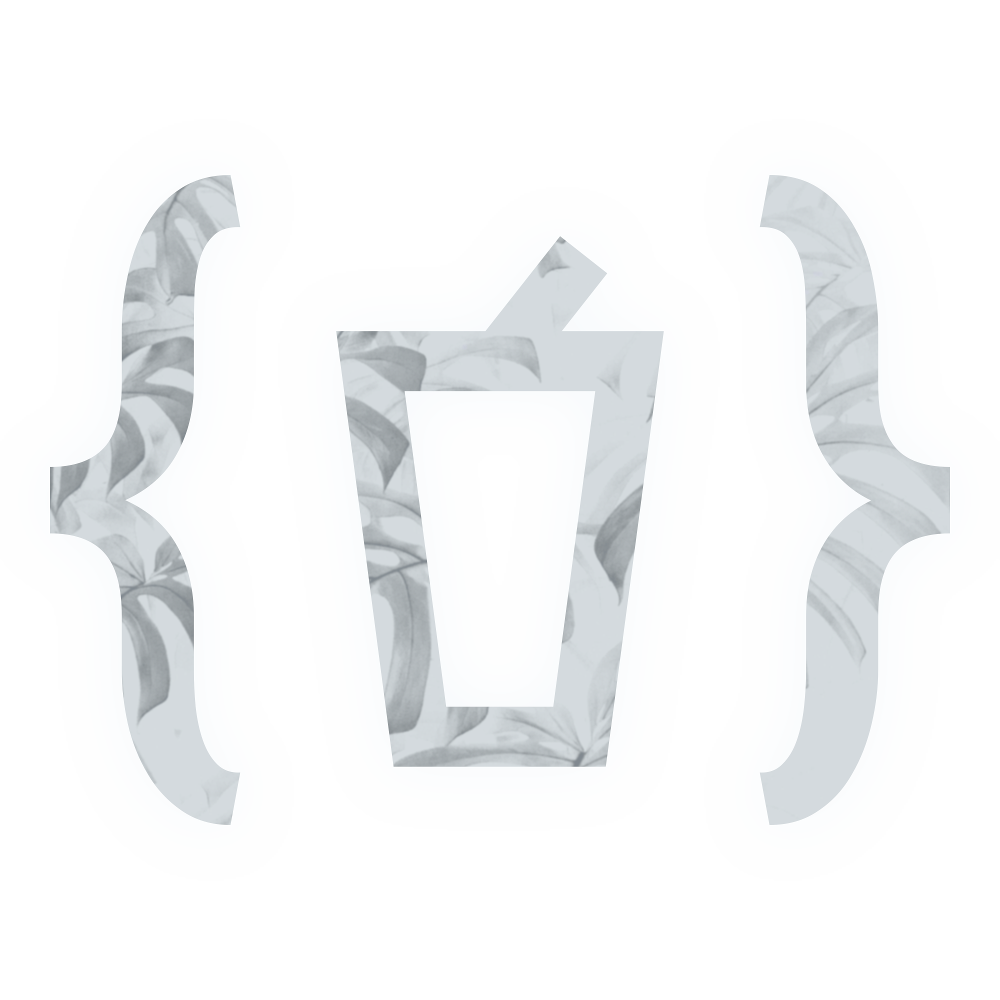

v1.3.3
This is my website where I like to keep things I guess. Obviously my username is icd-t, because "Iced Tea" was taken. If you have any questions, please don't contact me. You can poke around if you want. There isn't really anything special here, just some things I find interesting. For now, here are some places you can go in case you're intersted (Be warned, I am a terrible speller).

Contact
Social Media My socials and contacts. Don't use them unless you have a question. Actually, just don't use them at all.
Projects
The Compendium // Video Essays A giant collection of YouTube video essays that I like. Includes some famous ones, and some lesser known ones that deserve a watch.
Album Cards Some printable album cards that I have made of Albums that I like. I haven't updated this in almost a year though.
Extras
Book Reviews Reviews I've made of some books or short stories I've read or listened to. Some of these wont even be full books, so I guess this is more of a story review.
Game Reviews Reviews of games that I have played at some point. Most of them I hadn't finished at the time of the review.
Thing Reviews Reviews that don't fall into the first few catagories.
Interesting Finds Some things from accross the internet that I find interesting. Mainly stuff I care about for a week and then move on never to look back.